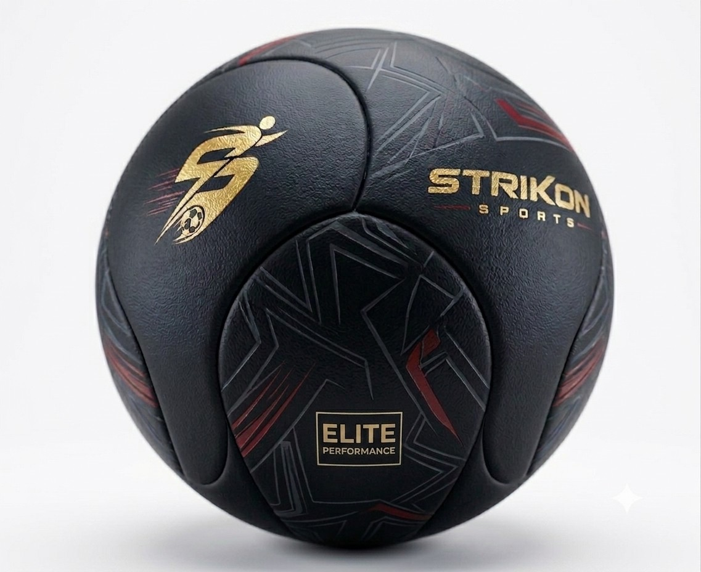

Custom Manufacturing & Private Label
Strikon Sports helps international buyers develop footballs according to their own brand requirements through trusted manufacturing partners in Sialkot.
- Custom Logo Printing
- Private Label Manufacturing
- OEM Production
- Custom Color Combinations
- Retail Packaging
- Barcode & Label Printing
- Custom Specifications
- Bulk Export Orders